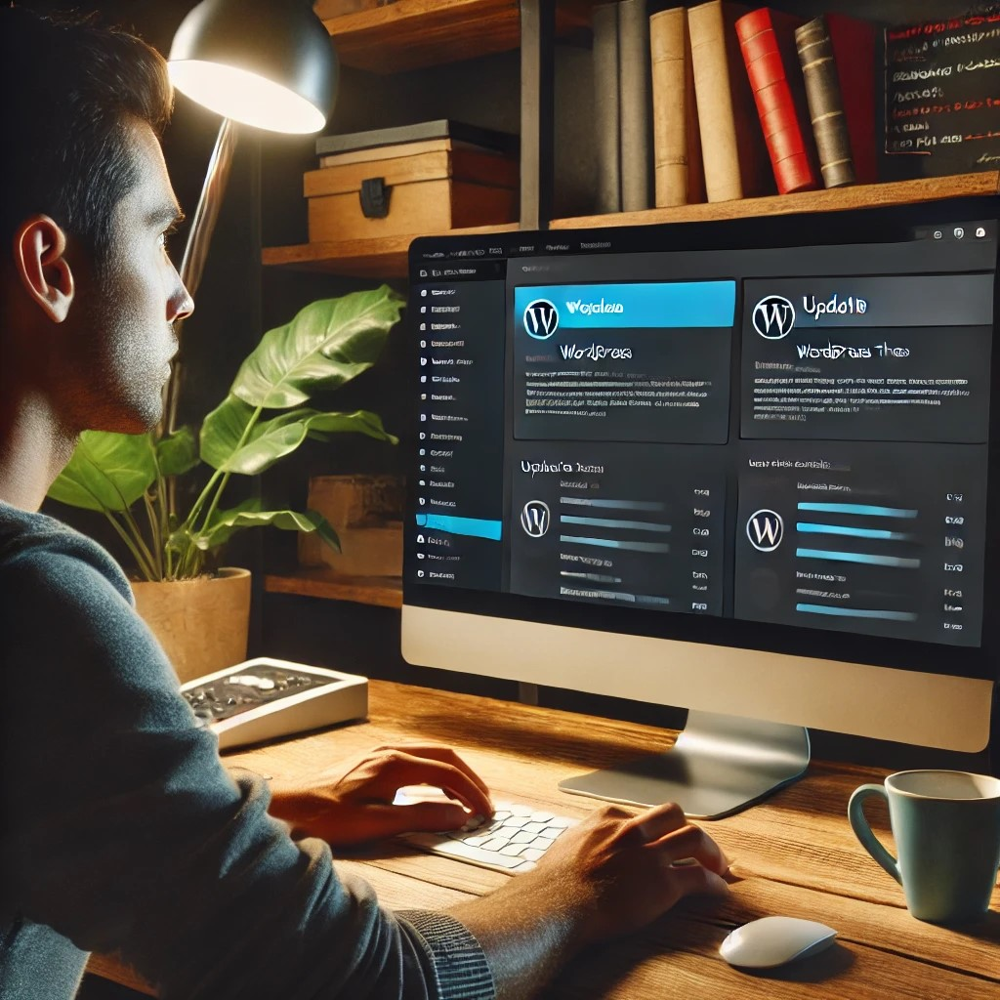

WordPress powers over 40% of websites on the internet, making it one of the most popular content management systems (CMS) available. Whether you are a blogger, business owner, or developer, ensuring your WordPress site is optimized, secure, and efficient is crucial for success.
In this guide, I will explore the best practices for WordPress websites to help you improve performance, security, and user experience.
Choose a Reliable Hosting ProviderYour hosting provider plays a critical role in your website's performance and security. Consider these factors when selecting a hosting service: |
|
Keep WordPress, Themes, and Plugins Updated
Regular updates are essential for maintaining security and functionality. Follow these best practices: |
 |
Optimize Website Performance
A fast website improves user experience and search engine rankings. Here’s how you can optimize performance: |
|
Strengthen Website Security Protect your WordPress site from potential threats with these security measures: |
|
Improve SEO for Better Visibility Search engine optimization (SEO) helps drive organic traffic to your site. Implement these best practices: |
|
Enhance User Experience (UX) A well-designed website keeps visitors engaged and improves conversions. Consider these UX strategies: |
|
Regularly Backup Your Website Backups act as a safety net in case of data loss or cyberattacks. Best practices include: |
|
Optimize Database and Remove Unused Data A cluttered database can slow down your site. Keep your WordPress database optimized with these steps: |